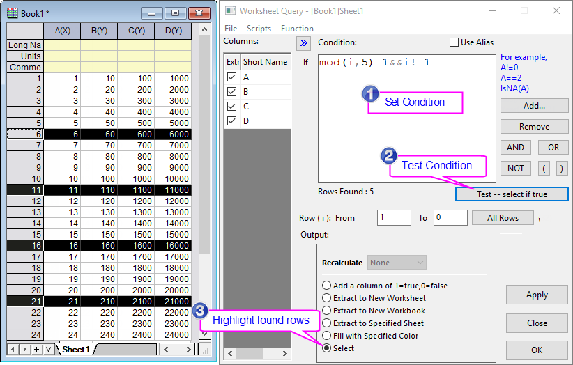
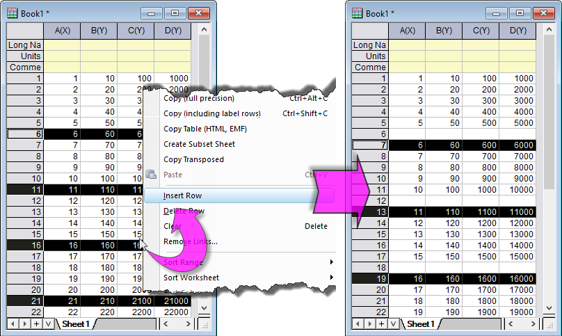
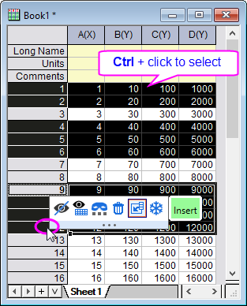

FAQ-1186 Wie füge ich eine Zeile für jede bestimmte Anzahl von Zeilen ein?
Insert-Row-of-Every-N-Rows
Letztes Update: 25.07.2023
Um eine Zeile alle N Zeilen einzufügen:
- Wählen Sie bei aktivem Arbeitsblatt im Menü Arbeitsblatt: Daten aus Arbeitsblatt extrahieren.
- Geben Sie im aufgerufenen Dialog Daten aus Arbeitsblatt extrahieren folgende Bedingung ein:
mod(i,N)=1&&i!=1
, um jeweils N Zeilen auszuwählen. Wenn Sie beispielsweise alle 5 Zeilen eine Zeile einfügen möchten, geben Sie
mod(i,5)=1&&i!=1
in dem Bearbeitungsfeld Bedingung ein.
- Klicken Sie auf die Schaltfläche Test -- Auswählen, falls wahr, um die Bedingung zu testen. Dies markiert jeweils alle N Zeilen.
- Wählen Sie in der Gruppe Ausgabe die Option Auswählen. Klicken Sie auf OK, um den Dialog Daten aus Arbeitsblatt extrahieren zu schließen.

- Klicken Sie mit der rechten Maustaste auf eine der ausgewählten Zeilen und wählen Sie Zeile einfügen im Kontextmenü. Dies fügt eine Zeile vor jeder markierten Zeile ein.

 |
- Sie können eine Spalte für eine jeweils bestimmte Anzahl von Spalten auf ähnliche Weise einfügen. Für die Spaltenauswahl können Sie das Menü Bearbeiten: Auswählen verwenden.
- Sie können die Strg-Taste drücken und die Maus verwenden, um nicht nebeneinander liegende Zeilen oder Spalten auszuwählen, und dann die Schaltfläche Einfügen auf der Minisymbolleiste, um eine Zeile oder Spalte vor jeder Auswahl einzufügen.
- 
|
Schlüsselwörter:Zeilen einfügen, Spalten einfügen, gleichmäßig einfügen, Zeilen in gleichen Abständen auswählen